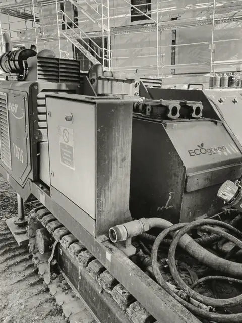

Wir bohren nach Wärme.
Eco Green bohrt Erdwärmesonden für Häuser im Kanton Zürich. Mit eigenen Geräten, bis die Leitung in Ihrem Heizraum ankommt.

Bohrfirmen in der Schweiz mit dem Gütesiegel für Erdwärmesonden. Eco Green steht seit 2021 auf der Liste.
Pumpwerkstrasse 40, im Furttal. Einsatz im Kanton Zürich und angrenzende Regionen.
von der ersten Anfrage bis zur Übergabe. Die Bohrung selbst dauert wenige Tage.
Was unter Ihrem Rasen passiert.
Ab etwa 15 Metern ist der Boden das ganze Jahr rund 10 Grad warm. Pro 100 Meter kommen etwa 3 Grad dazu. Diese Wärme holt die Sonde ins Haus.
Schema. Schichten und Tiefe sind an jedem Ort anders.
- 011 bis 3 Arbeitstage
Abklärung
Sie schicken uns Adresse und heutigen Verbrauch. Wir prüfen im Wärmenutzungsatlas des Kantons, ob auf Ihrer Parzelle gebohrt werden darf, und schätzen Anzahl und Tiefe der Sonden.
- 024 bis 8 Wochen
Bewilligung und Förderung
Das Bewilligungsgesuch geht über Ihre Gemeinde an das AWEL. Gleichzeitig reichen Sie das Fördergesuch beim Kanton ein. Gebohrt wird erst, wenn beides steht.
- 031 bis 2 Tage pro Sonde
Bohrung
Das Raupengerät fährt auf Ihr Grundstück oder kommt mit dem Kran über das Haus. Bohrwasser und Bohrschlamm fangen wir in Mulden auf und führen sie ab.
- 04am Tag der Bohrung
Sonde einbauen
In das Bohrloch kommt die Sonde aus Kunststoffrohr. Den Raum rundherum füllen wir mit einer Zement-Bentonit-Mischung, damit kein Wasser zwischen den Bodenschichten fliesst.
- 051 bis 2 Tage
Druckprobe und Anschluss
Jede Sonde wird mit Druck geprüft. Wir verlegen die Leitungen bis in den Heizraum, setzen den Verteiler und füllen das System mit Wärmeträgerflüssigkeit.
- 06mit der Schlussrechnung
Übergabe
Sie erhalten das Bohrprotokoll und die Rechnung für die Bohrung. Beides verlangt der Kanton für die Auszahlung des Förderbeitrags. Ihr Heizungsinstallateur schliesst die Wärmepumpe an.
Förderbeitrag abCHF 6'800
Das Fördergesuch kommt vor der Bohrung.
So viel zahlt der Kanton Zürich an eine Erdwärmepumpe bis 15 kW, die eine Öl-, Gas- oder Elektroheizung ersetzt. Darüber kommen CHF 420 pro kW dazu. Als Baubeginn gilt die Bohrung. Wer vorher bohrt, verliert den Beitrag.
Im Gesuch verlangt der Kanton eine Bohrfirma mit gültigem Gütesiegel. Eco Green hat es.
Quelle: Kanton Zürich, Förderprogramm Heizung ersetzen, Sole-Wasser-Wärmepumpe. Das Programm läuft 2026 unverändert weiter.

Bohren ist laut. Das sagen wir vorher.
Bohrgerät und Kompressor hört man in der Nachbarschaft. Darum arbeiten wir zu festen Zeiten und reden mit Ihren Nachbarn, bevor das Gerät kommt.
- Arbeitszeit
- Montag bis Freitag, 07.00 bis 12.00 und 13.00 bis 18.00 Uhr.
- Wochenende
- Am Wochenende und an Feiertagen bohren wir nicht.
- Nachbarn
- Brief mit Datum und Dauer eine Woche vor Bohrbeginn.
- Bohrschlamm
- In Mulden aufgefangen und fachgerecht entsorgt. Rasen und Zufahrt schützen wir mit Platten.
- Ansprechperson
- Eine Person für die ganze Baustelle, mit direkter Handynummer.
Baustellen
Alle Bilder und Projektbeispiele




Was Hausbesitzer zuerst fragen.
Ihre Frage fehlt? Rufen Sie an: 044 400 20 20.
Darf auf meinem Grundstück gebohrt werden?
Das zeigt der Wärmenutzungsatlas des Kantons Zürich für jede Parzelle. Wir prüfen das vor der Offerte. Liegt eine Sonde näher als 2,5 Meter an der Grundstücksgrenze, braucht es die Zustimmung Ihres Nachbarn.
Wie tief wird gebohrt?
Das hängt vom Wärmebedarf und vom Untergrund ab. Ein Einfamilienhaus braucht oft eine oder zwei Sonden von 150 bis 250 Metern. Im Kanton Zürich reichen Erdwärmesonden meist bis höchstens 500 Meter.
Wie lange dauert die Bohrung?
Pro Sonde meist ein bis zwei Tage. Dazu kommen ein Tag für Aufbau und Abbau und die Arbeiten für den Anschluss ans Haus. Den genauen Plan erhalten Sie mit der Offerte.
Wer reicht die Bewilligung ein?
Jede Erdwärmesonde braucht eine gewässerschutzrechtliche Bewilligung des AWEL. Eingereicht wird bei der Baubehörde Ihrer Gemeinde, auch über eBaugesucheZH. Wir stellen die Unterlagen für Sie zusammen.
Was bedeutet das FWS-Gütesiegel?
Die Fachvereinigung Wärmepumpen Schweiz vergibt es an Bohrfirmen, die Beratung, Sondenmaterial, Ausführung und Sicherheit auf der Baustelle nach ihren Vorgaben erfüllen. Das AWEL empfiehlt Bauherrschaften solche Firmen. Für den Förderbeitrag verlangt der Kanton eine Bohrfirma mit gültigem Gütesiegel.
Muss ich meine Ölheizung ersetzen?
Solange sie läuft, nicht. Wird sie ersetzt, darf im Kanton Zürich seit 01.09.2022 grundsätzlich nur noch ein erneuerbares System eingebaut werden. Eine Ausnahme gibt es, wenn die erneuerbare Lösung über die Lebensdauer mehr als 5 Prozent teurer ist.
Schicken Sie uns Ihre Adresse.
Wir prüfen, ob auf Ihrem Grundstück gebohrt werden darf, und melden uns mit einer ersten Einschätzung zu Sonde und Förderbeitrag.